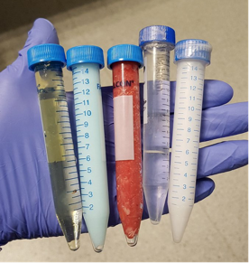

Read the signal
Connect inversion time and echo time to the observed image contrast.
Formative quantitative MRI practical
Explore real phantom data, estimate relaxation times, and decide which measurements make a quantitative map trustworthy.

Connect inversion time and echo time to the observed image contrast.
Explain the role of TR, the scale factor S0, magnitude data, and residuals.
Use fit quality and spatial variation to distinguish a number from a reliable measurement.
Trade the number and placement of measurements against precision.
Your progress and answers stay in this browser. No student data are uploaded.
Part 1
Move through the inversion times, then select a voxel inside one of the samples. The curve is assembled from the same location in all 26 images.
Click inside a sample. Avoid its edge, where a voxel may contain more than one material.
For each possible T1, the browser finds the best S0, then keeps the pair with the smallest squared residual. The residual plot shows the signed difference between each measurement and the fitted curve, making systematic model mismatch easier to identify.
Check your reasoning
Look near the null point
Part 2
The same phantom was imaged at 30 echo times. Inspect the decay and use the residuals to decide whether a single exponential describes every measurement.
At long TE, which samples remain visible? That persistence is evidence about T2, not simply brightness.
The TR-dependent contribution is constant across this series and is absorbed into the fitted scale S0. The residual plot helps reveal structure that a single exponential misses.
Evidence in the residuals
Part 3
A map is not calculated from the image as a whole. The signal curve is fitted independently at every included voxel, and each fitted value becomes one coloured map pixel.
Take the signal from the same voxel in every image.
Press Calculate map to begin fitting voxels.
Colour encodes the fitted relaxation time, not image brightness.
Choose the parameter and mask, then calculate the voxel-wise map.
| Sample | Mean T1 | Spatial SD | CV |
|---|
The sample numbers run from left to right in the MR image. Spatial variation includes image noise and model mismatch; it is not a confidence interval on the mean.
Does the curve fit? Is the mask sensible? Are the measurements placed where they constrain the parameter?
Final challenge
Design separate T1 and T2 protocols that both meet the precision criterion, then make their summed scan duration as short as possible.
This challenge uses a numerical phantom with five perfectly homogeneous samples. Every voxel in a sample has the same PD, T1 and T2; only the added Gaussian image noise causes fitted values to vary. A protocol qualifies when every sample has CV below 10%.
| # | Sequence | TI (ms) | TR (ms) | TE (ms) |
|---|
Allowed ranges: 5 < TE < 500 ms · TE < TR < 10,000 ms · 0 < TI < TR − TE
T1 can be measured with spin echo by varying TR while keeping TE fixed (saturation recovery). Inversion recovery provides an alternative by varying TI. Change one decision at a time and predict how the image contrast will respond.
Weighted images will appear here. After acquisition, click a sample voxel to inspect its fit.
Combined time is calculated only after both separate measurements qualify.
Every voxel has hidden values for proton density ρ, T1 and T2. A spin-echo row generates
The recovery term changes with TR, so a series of spin-echo images with different TR values and a fixed TE can be fitted for T1. This is a saturation-recovery measurement.
An inversion-recovery row generates
ε is independent zero-mean Gaussian noise with standard deviation 0.02 in the normalised signal units. It is added after taking the signal magnitude, matching the original MATLAB simulator and avoiding an additional magnitude-noise bias.
The fitter does not split spin-echo and inversion-recovery images into separate analyses. For each voxel it tests a grid of candidate T1 and T2 pairs. For every pair it evaluates the appropriate equation for each protocol row, solves analytically for the single shared scale ρ, and calculates the sum of squared residuals across all acquired images. The T1, T2 and ρ combination with the smallest residual is retained.
With only one sequence type, two images can be sufficient: their timing must create different sensitivity to the requested parameter while keeping unwanted weighting controlled. For T1, spin echo needs different TR values with TE fixed; inversion recovery can instead vary TI. For T2, use different TE values with the same recovery settings. A protocol mixing spin echo and inversion recovery has three unknowns in the joint model, so at least three independent measurements are required. Those measurements must vary both recovery weighting and echo-time weighting to separate T1, T2 and ρ.
For this challenge, T1 and T2 are optimised as separate measurements. Every protocol row represents a separately acquired 64-line image, so its estimated duration is 64 × TR. The protocol time is the sum across its rows, and the final score is the shortest qualifying T1 time plus the shortest qualifying T2 time. Multi-echo readouts and parallel imaging are not modelled.
Each violin contains the fitted voxel values from one sample. Its width shows where estimates are concentrated, the white dot marks their mean, and the red line marks the true mean. Clicking a weighted image selects a voxel and displays that voxel’s measured signals and the predictions from the joint fit in acquisition order.